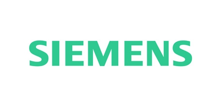

Energy
FBG Technology
— A Natural Choice
Fiber Bragg Grating (FBG) technology is the ideal alternative for conventional (electric) and other optical based measuring technologies in Electric Power Industries.
The intrinsic features and passive nature of FBG based sensors make them extremely safe to use and a natural choice for all types of high-voltage, explosive and hazardous environments, such as the ones found in Electric Power Generation, Transmission and Distribution.
As a specialized company in designing, developing and producing advanced FBG based monitoring systems, FiberSensing has been contacted by some of the major manufacturers of electric power machines to industrialize their monitoring requirements. This strategic approach has brought about two large OEM supply contracts until today.
FiberSensing is continuously seeking to expand its partnerships and applications within the Energy sector.
- Fiber optic vibration monitoring of high power generators. Check Siemens Energy case study
- Fiber optic temperature monitoring of high power generators. Check Siemens Energy case study
- Fiber optic multipoint high-temperature slot sensors used at selected windings of Power Generators
- Frame Foot Loading (FFL)
- Multipoint temperature monitoring in high power transformers (Hot·Spot System)
- Temperature mapping in overhead power lines (T·Mol System)
Integrity Assessment in Real Time
FiberSensing vertical solutions for the energy market are being installed in large scale electric power machines, abling manufacturers and power utilities’ owners to assess their systems’ performance and integrity in real time.
Moreover, FiberSensing solutions are a valuable tool for the design optimization of electric power machines during the products development stage as well as for customer acceptance tests during the production stage. Additional benefits include reduced maintenance intervals and unplanned shutdowns, extended life time operation, lower insurance premiums, profit maximization…
High-end certified products made of top rated materials combined with the company’s multidisciplinary competences, proprietary technology and proven experience make FiberSensing stand as an unrivalled partner for potential customers in need of reliable monitoring systems for applications in the Energy market.
- 62 Measurement
Units Sold - 40 Instrumented Power
Generators - 2000 Delivered Hot Spot
Probes - 2 Major OEM
Contracts

Advantages
-
Passive Technology
-
Multipoint Measurements
-
High Accuracy
-
Low Losses
-
Real time Monitoring
-
Long Term Measurements
-
Self-Referenced
-
Multiplexing Capability
Reference Customers
-  Siemens Power Generation
-
 Transformers Provider
Transformers Provider - General Electric Company
Energy
Products List
View all


“FiberSensing products are simple to operate.” — Inversion-Sensor, Russia